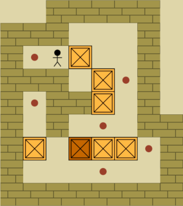

Sokoban
Reproduction du célèbre jeu Sokoban en langage C.
Le joueur doit déplacer des caisses sur des cases cibles
dans une grille en deux dimensions.
Voir le projet
Ce que j'ai appris
Ce projet m'a permis de mieux comprendre les tableaux, les boucles, les conditions et l'organisation d'un programme complet en langage C.